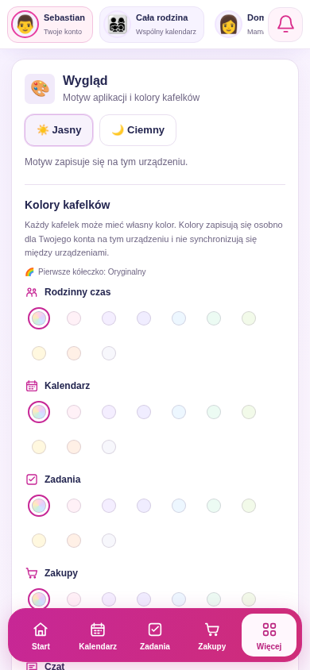
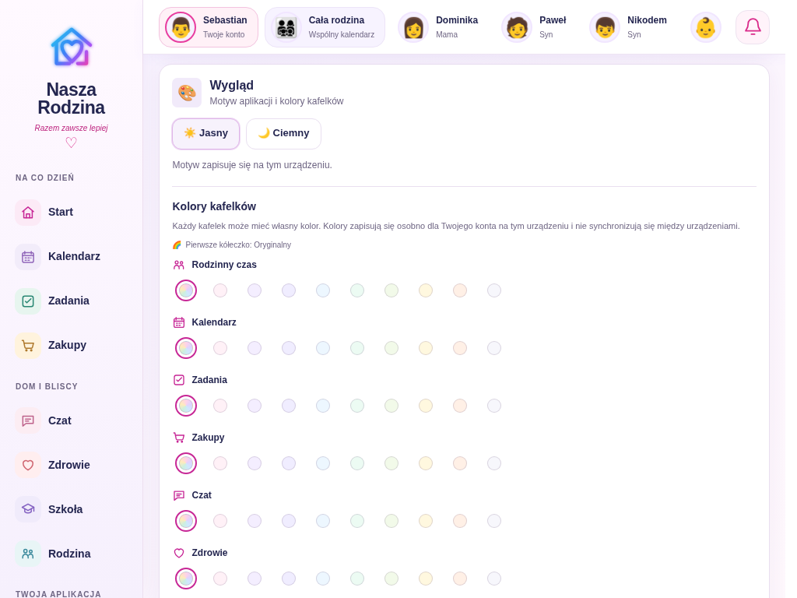
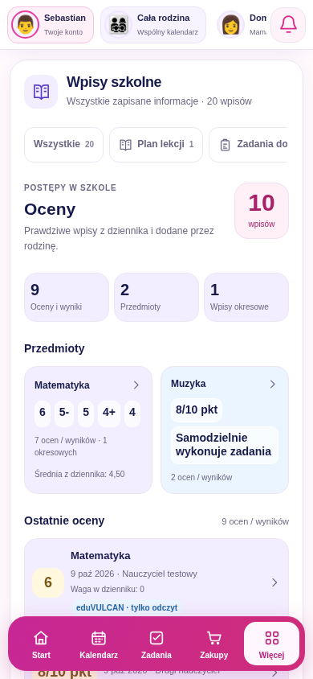
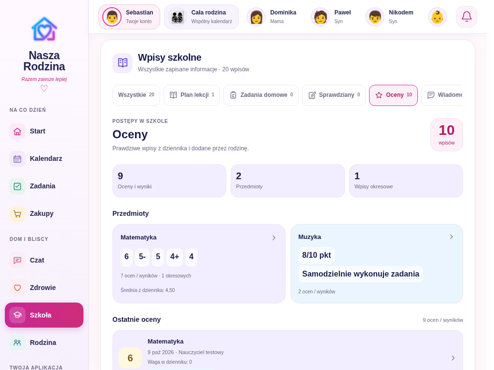
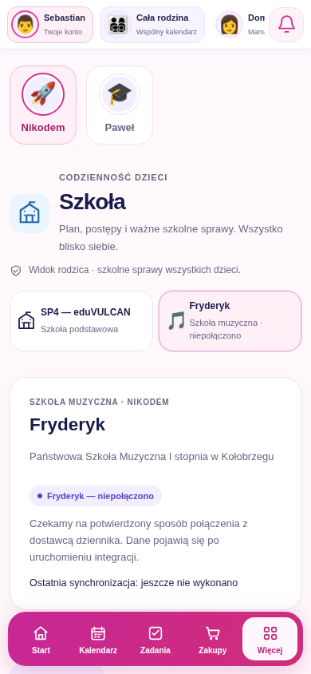
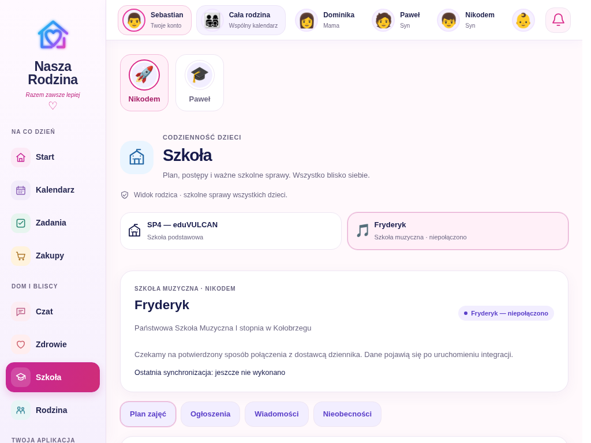

Podglądy Chromium z testów emulatorowych, 9 października 2026. Widoczne konta i wpisy są danymi testowymi. Fryderyk pozostaje niepołączony. Kliknij obraz, aby otworzyć go w pełnym rozmiarze.
Kompaktowe przyciski motywu i kolory kafelków zapisane osobno dla UID na urządzeniu.


Zachowany pastelowy układ; ostatnie oceny można rozwinąć i zwinąć bez ponownego pobierania dziennika.


Jawny stan „niepołączono”. Bez danych SP4, formularza sekretów i automatycznych zapytań do portalu.

